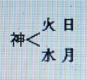
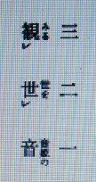

神と経綸について ３
明主様御講義 「キリスト教」 （昭和10年8月5日発行）
基督教
「イエス、世界人類の為に罪を贖（あがな）い救う為に生れて来たのである。
イエスはユダヤ民族でイスラエルの民である。
その時代ユダヤ教という教あり、その予言に最後の世にメシヤが現われる。
メシヤは救世主のことであり、キリストである。
メシヤとはヘブライ語で救世主という事になる。
素盞嗚尊・・・照・・・イエス
月 神・・・暗・・・マッソン（フリーメーソン）」
贖罪主
「イエスをキリストでないと言う事を見破った者ありて、あれは偽のキリストであると皇帝に告げた。
その者を生かして置いたら非常なる間違いになると言う見地からイエスを磔刑にしたのである。
イエスは素盞嗚尊が以前罪を犯した為、黄泉国へやられた。
その罪を赦して戴くために大きな功をたてなければならん、その贖罪をなされたのである。
それ故イエスは贖罪主である。人類の罪の代表者なのである。人類のお詫びの代行者なのである。」
救世主
「キリストは人類の諸々の罪の赦し主である。救世主は罪を赦しに現われるのである。

霊体密着して人となる。離れると八となる。
神明統一者である。
キリストのキは天地を貫く貴い字で、神の霊返しはキである。
キリストが雲より降ると言う事があるが、人間が雲に乗ることは絶対に出来ない。
人間が雲の上に止っていられん事に出来ているのである。
これが出来たら天地の律法に反することになる。
イエスとはイスラエルの事にして、エは天地を貫かぬ。
エは枝の働き、又江は水の枝、スは一人で統（すべ）るとなる。
素盞嗚尊の分身・分霊の事となる。
雲から降ると言う事は何か。
日月を隠すものは雲である。神を隠すものとなるのである。神を隠すものは雲の働きである。

火 日
神
水 月
これは科学文明の事である。神を隠すものは現代科学文明である。
今の文明はいかに神を隠そうかと一生懸命である。
神を隠そうと今の学者が総ての神とか霊とかを無視してこの事を発表すると、皆インチキであると決定して終う。
しかも今の世の神とか霊とか言う連中が多くインチキばかりやっているのが多い為で、本物こそ良い面の皮である。
これが為本物は非常に迷惑であるが、これを区別することを致さない警察は実に情ない。
科学がいかに神を隠すことに一生懸命であるか、それが雲の働きである。
現代文明は科学の文明である。現代においては現われると言う事が雲から現われるという事である。
則ち天から降ると言う事になるのである。
神霊文明・・・科学文明
神霊文明が天で、科学文明が地であるから、神霊文明から科学文明へ降るのである。」
キリストの再臨
「二千年の後黄金の国にキリストが再臨すると予言してあります。
黄金の国とは日本の事である。人の顔を見れば日本人は黄金色をしているのである。
中国人は青金の色であり、日本の地下には金が沢山ある。
その霊気により黄色となるのである。
キリストとイエスと一度に再臨するとある。
キリストはイエスの父なのである。
イエスでは世界統一は出来ん。二千年前ですら出来なかったのである。
国常立尊が一度世界を統一した事がある。
今イエスが現われて罪を贖（あがな）ったところで赦すことが出来んから、何程出ても無駄である。
観音会のことを世界で知ったら驚く事である。
今度は本当に金剛力を持った神様が出て今までの世を救うのである。
しかも罪を赦す権力を持って出られるのである。」 （「観音講座 第三講座」より）
明主様御講義 「観世音の本体」 （昭和10年8月5日発行）
「和光同塵（光をやわらげ、ちりにまじわる）
観音様は人類救済の為にいかなる極悪な者も、獣や虫類に至るまでお救いを垂れられる為、馬頭観音のごとく、お姿を変えられて地獄の者までもお救いになられる。
最高最貴の神様がこんなにしてまでも一切衆生を救われる。およそ人間は神様のお子である為、この苦の娑婆にあえぐ人間達を天国的生活に入らしめんと大変な御努力を遊ばされるので恐れ多い極みであります。
何にも捉われず三十三相に化身されて融通無碍、円転滑脱、対手（あいて）に合せて喜ばれる様にされる。
天台大師の観音原義のはこじつけで解らんが、世の音声を見る、そして救うと言うが、音を見るなぞとはおかしな話で、物は見る、音は聞くのである。
要するに事実を解く事が出来ないのである。
梵語＝観世音（アバロキテシュバラー）支那の鳩摩羅什（クマラジュウ）が観世音としたのである。
天照皇大御神が御現れになり、天忍穂耳尊（あめのおしほみみのみこと）がお生れになった。
この時分に相当に人類はあったが統治は出来なかったのである。
天照皇大御神ー左守 国常立尊（くにとこたちのみこと）
右守 素盞嗚尊（すさのをのみこと）
国常立尊は忠義というより、実に誠忠無比の神様で力のある神様である。
国常立尊が天下平定の御経綸を申付けられたが、最初は良く治ったが、余り厳格な神様故人民が窮屈になりし為、どうしてもやり切れん様になった。
そこを見て取ったのが盤古神王の子天之若彦命（あめのわかひこのみこと）である。
この命が国常立尊を排斥する運動を起したのである。
これに共鳴者が非常に多かった。
そして盤古神王を押立てんとしたが、盤古神王は善良でおとなしい神様で力がないから、この神を立れば楽が出来るからと、看板に盤古神王を立て、実権は天之若彦命が握り世界統治をやられたのである。
この為国常立尊は隠退遊ばされたのである。
この御隠退は東北へなされたと成っているが、世界から見ると日本であり、日本からすれば東北である。
日本の東北、即（すなわち）艮（うしとら）へ御隠退された為にこの神様のことを艮（うしとら）の金神（こんじん）と申上げるのである。
日本の艮はどこか、北海道の芦別山に御隠退になられたのである。
又一方幽界では閻魔大王となられたのである。
神様は霊分身が御自由である為、幾柱にも別れることが出来るのである。
そこで伊都能売神様は、一方印度にて観音になられ、一方は兄の花姫尊（このはなひめのみこと）（梅の花）となられて富士山に御鎮りになられ、
又、一方は金龍となって近江の国の琵琶湖へお隠れになられたのである。
その故〔は〕富士山と琵琶湖を邪神に占領されたならば、日本は危険であるからである。
富士山はなぜ大切かと言うと、人間で言うと富士山が臍（へそ）であるからである。
人間の体としても臍は一番大切なところとすればその意であるからである。
この為兄の花姫と成られ、金龍となられてこの二ケ所を守られたのである。
豊雲野尊（とよくもぬのみこと）は国常立尊の妻神様であるが、夫神様の犠牲となられ坤（ひつじさる）の方へ御隠退になられた。
坤の方とは鬼界ケ島の事である。日本の西南に当るところである。
この神様が思兼尊（おもひかねのみこと）様である。
又一方別れて木の花咲耶姫命（このはなさくやひめのみこと）になられて印度に行かれて釈迦となられたのである。
木の花咲耶姫命の木の花は桜の花の事である。
天之若彦命が世界統治をされて一時は楽になったと喜んでいた所、天之若彦命は女狂い等始めた為又非常に乱れて終った。
天之若彦命の奥方の若姫岐美命（わかひめぎみのみこと）は非常に貞節な方であったが、いつの間にか素盞嗚尊と恋愛関係を結ばれた。
素盞嗚尊はその時朝鮮に居られたので、烏となって行って逢われたのである。
於加良洲明神（おからすみょうじん）と言うのはこの神様を祭られたのである。
その後に春日明神となられたのである。
音姫尊は素盞嗚尊の奥方であるが、これが乙姫の事である。
天照大神様の妹の為弟姫と言うたのを音姫又は乙姫と申されたのである。
この神様は観音様と非常に関係のある神様である。
音姫は非常に嫉妬深い神様で、遂に嫉妬の余り龍神となり海の底へ隠れられ、
和田津海（わたつみ）の神、大（おほ）和田津海の神、海原姫命（うなばらひめのみこと）とも言うて海底へ龍宮城を造られたのであるが、
これは霊界での事であって、海の王様となられたのである。
音姫は非常に欲が深く、又非常に強かったから、世界の宝を集めて海に隠れたのである。
宝と言っても霊的の事である。
その為地方にある鉱山が出なかったのである。
その宝を以って天下の権を掌握しようとかゝったが、女であるから駄目であった。
致し方なくその時の支配者を緩けたのである。
神界の支配者 盤古神王
大自在天
この神が金が必要の為龍宮の乙姫の宝を要する為に、乙姫から貰って来たのである。
この何千年来乙姫が実権者であったのである。
上記のごとく音姫の世を観ているというのが観世音であった。
時期は約三千年で九千年六千年三千年となっている。

三 二 一
みる 世を 音姫の
観ﾚ 世ﾚ
音
国常立尊が天照大神から命ぜられた時が九千年前である。
音とは日即ち統一の形である。
要するに立即ち龍が世界を統一するという字であるから、音姫が天下を統一している事になるのである。
龍が天下を統一した時は暗となるのである。
又闇である。ヤミの字には必ず音の字が付いているのを見てもよくわかる。
字は皆意味があって出来ているのである。
乙姫の統一した間を「暗の世」と言う。
乙姫ともかくのであって、この乙姫の姿は黒龍である。
黒龍は悪龍である。
私は越智隆蔵氏方の龍神の池に黒龍の泳ぎいるのを見たことがあったが、

越―乙
智―血―霊
隆―龍
蔵―オサム
カクレル
カクス
越智隆蔵とは乙姫の型である。
乙の字が既に龍の形なのである。
乙姫の血即ち霊を持った龍を隠しているとか隠れているとか、治めている、右の様な意味にて正しく乙姫なのである。
越智方に龍神のお祭りの時三、四尺の池を掘り龍神を祭った時池一杯に五分間位黒龍が泳いでいたので良く解った。
暗黒無明の世であると言う事は音姫（乙姫）の世であるという事である。
観世音とは乙姫が世を支配している間の御名であるから、今後余り長い間使用する様なことはない。
乙姫が神様に世を譲れば観世音とは言われなくなるのである。
この意味においても遠からず観音会も会名の変る時が来ることが悟られるのである。
又一名観自在天とも言い、印度では要するに観自在天なのである。
印度は「大自在天」が最高の神であるから、この自在天の世を観ているという意味になるのである。
日本では観世音である。
これは前述の音姫の世を見ているのである。
龍 神止 暗 黒
立 正 安 国
日蓮上人に邪神が懸ってこの立正安国論を説いたのである。
この邪神も龍神である事は立正の立で解るのである。
立正安国論もあの当時であったから良かったのであるが、今日では駄目である。
この意味は「龍が神を止め暗黒の世とする」というのである。
観音様は円満具足という事になる。丸くて完全であるという事である。真丸という事である。

真丸はダイヤモンドをよく見ると解る。
ダイヤは八角であるからその八角を取って行くと真丸になるのである。
ハッパ六十四角である。
六十四角が真丸になるのである。
又三十三相というのが実は三十二相である。
この三十二相は化身で、本体の聖観音を加えて三十三相というのである。
聖観音は決して化けないのである。
六十四州と言うのが、この意味に相通じているところがある。
麻邇（まに）の玉―如意宝珠（にょいほうしゅ）とも言う。
神霊（みたま）というのを神という。
神というのは真丸な円満具足なる事である。
玉の横の丶を上に掲げると主になる。
玉の字は非常に貴い字である。
伊都能売とは円満滑脱である。
玉はくるくる自由自在にどちらへでも転んで行く。
神様に角があっては善良な神様とは言えぬ。
丸くならねばならん。
丸いから転るのである。
自由無碍に転るのである。
法輪を転ずるとは観音様の事である。
滑稽洒脱（しゃだつ）である。
大いに笑わせるのである。
観音行に近い人程丸いのである。
どんな人にも合わして行かねばならんのである。
怒るのは真丸ではない。
人に突掛るのは角である。
観音行はこの角が取れなければ丸くなる事は出来ない。
又湿っぽくては駄目である。
笑冠句（わらいかんく）を奨励するのはこの意味からである。
笑ったり笑わしたりすれば、自然に天国状態となり、円満になれるのである。
世界の平和とは争がなくなる事である。」 （「観音講座 第三講座」より）